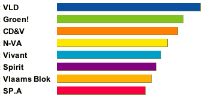
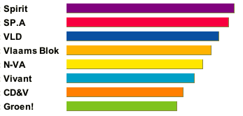
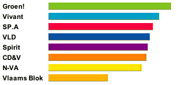
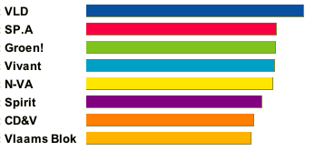
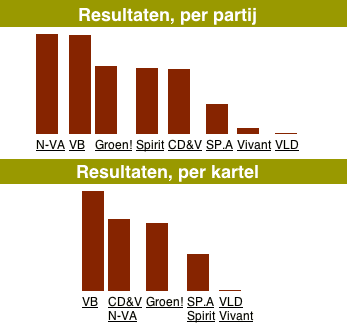

Stemtestjes, editie 2004
vrijdag 11 juni 2004 | Actualiteit
Ook ik heb de populaire stemtestjes doorlopen van zowel de VRT als van De Standaard (klik onderaan voor de prentjes).
Twee conclusies:
- Stemtesten houden geen steek
- Stemmen is niet gemakkelijk als groene separatist
De VRT
Levenskwaliteit

Geld

Normen en waarden

Algemeen stemprofiel

De Standaard

Anonymous op 19 juni 2004
Hello My friend,
I am Currently looking for a girlfriend. Perhaps you can help me get one. I tried every site like AWS but never got a proper e-mail back. I seems that nobody want to help a poer west-vlaminckske? I am very sad and desparate right now. So please I you have enough of your girlfriend and you want to get rid of her then please feel free to give her away to me. If you have very interesting sites for me then please tell me. I need one right now.
; ).
Thank you (come again).